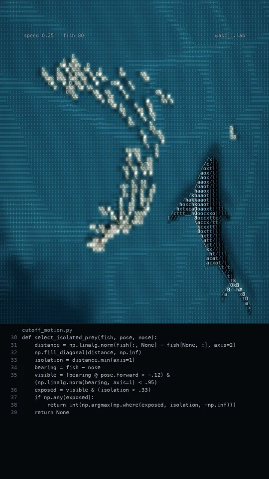

03
Shark intercept
A shark approaches a school of 80 fish. One breaks away. Tail strokes power the chase, and the counter drops when the shark makes contact.

A shark approaches a school of 80 fish. One breaks away. Tail strokes power the chase, and the counter drops when the shark makes contact.